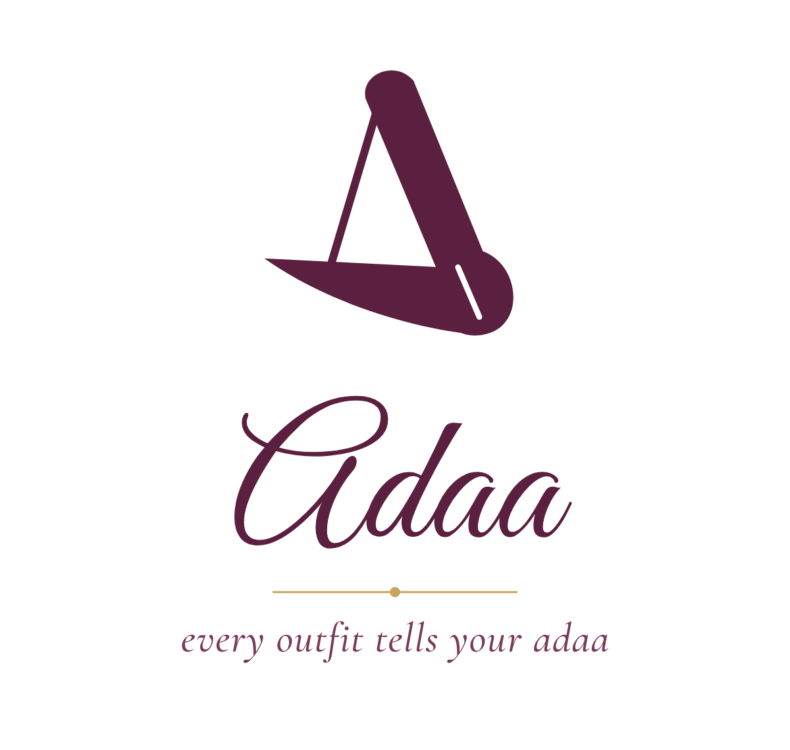
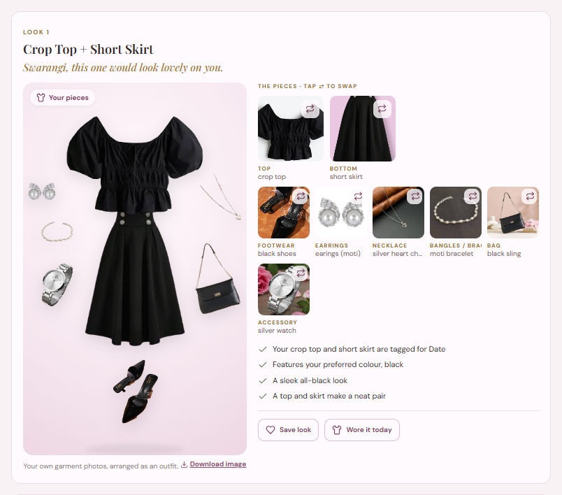
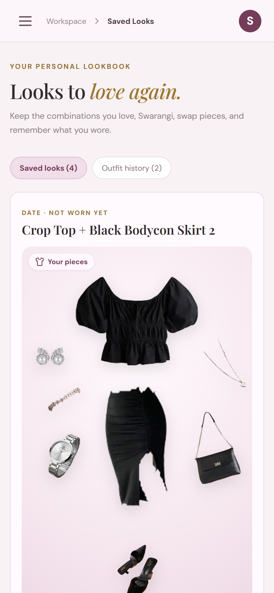

| Problem | What it looks like in daily life |
|---|---|
| "Nothing to wear" | People own many clothes but forget what they have, so they repeat the same few outfits. |
| Wasted money | New clothes are bought that don't go with anything already in the wardrobe. |
| Generic apps | Most fashion apps suggest clothes the user doesn't own, or push shopping. |
| Indian wear ignored | Sarees, kurtas, lehengas, jhumkas, wedding functions and festival colours are rarely understood. |
| Untrustworthy AI | AI image tools can "invent" clothes or show pieces that don't look like the real ones. |
Adaa is a web app (it also installs on a phone's home screen) that works like a personal stylist for your own wardrobe.
| Idea | How Adaa does it |
|---|---|
| Start from what you own | The user adds a photo and a few details of each piece once (clothes, jewellery, shoes, bags). |
| Ask naturally | Type or speak a request in English or Hinglish, e.g. "Aaj college ke liye kuch comfy", or tap options. |
| Complete, honest looks | Up to 4 different outfits, each with the reasons it works and honest cautions. If a piece is missing, Adaa says so instead of inventing it. |
| See the real pieces | Each look is shown as an "outfit board" made from the user's own photos with the backgrounds removed. No AI-generated images. |
| Indian occasions built in | Wedding functions (haldi, mehendi, sangeet…), about 30 festivals with their colours, and Hinglish words. |
| Wear more, buy less | Wear stats, cost per wear, and "Shop Smart" ideas for the few new pieces that would unlock the most outfits. |
Adaa has three main parts: the app in the browser (what the user sees), the server (stores data and chooses outfits), and a few outside services used only for specific jobs.
| Part | Job |
|---|---|
| Browser app | Shows every screen. Runs the photo-cleaning AI models on the user's own device, so wardrobe photos are never sent to an AI company. Voice uses the browser's speech-to-text (in Chrome, Google's speech service). |
| Caddy | The "front door": gives the site its padlock (https, encrypted connection) and adds security headers. |
| FastAPI backend | The API (the set of addresses the app talks to): accounts, wardrobe, looks, planners. Also serves the app's files, so only one program runs. |
| Rule-based stylist | Plain Python rules that pick and explain outfits (section 7). |
| SQLite + photo files | All data in one database file; photos as files with random names. |
| Backups | Every night: a copy of the database and photos, the newest 7 kept on the server, plus an off-site copy in Backblaze B2. |
How a person uses Adaa, from first visit to everyday use:
| Step | What happens |
|---|---|
| 1. Understand | The request text is read by keyword rules: occasion, style, colours, comfort, festival, and any piece the user names ("my purple navari"). |
| 2. Build | Every sensible combination is built from the user's own items: one-pieces (saree, gown, dress) and top + bottom pairs. |
| 3. Score | Each combination gets points for the occasion, style, colour harmony, weather and style profile. |
| 4. Complete | Shoes, jewellery and a bag tagged for that occasion are added. |
| 5. Choose and explain | Up to 4 looks that really differ are picked, each with reasons and honest cautions. |


| Layer | Technology | In simple words |
|---|---|---|
| Frontend | React 18, Vite, plain CSS, Lucide icons | React builds the screens; Vite bundles them into fast files for the browser. |
| Backend | Python, FastAPI, Uvicorn, Pydantic | FastAPI answers the app's requests; Pydantic checks that incoming data is valid. |
| Database | SQLite (WAL mode) | A whole database in one file; WAL lets reading and writing happen together. |
| Styling logic | Rule-based Python | Hand-written styling rules instead of a paid AI service. |
| In-browser AI | onnxruntime-web, IS-Net, SegFormer-B2 clothes parser | Free AI models that run inside the browser to remove photo backgrounds and recognise clothes. |
| Weather | Open-Meteo API | Free weather service, no account or key needed. |
| Voice | Web Speech API | The browser's built-in speech-to-text. |
| SMTP (Gmail app password) | Sends email-confirmation and password-reset links. | |
| Hosting | Azure for Students VM, Ubuntu 24.04, Caddy, systemd | A free student server; Caddy provides https; systemd keeps Adaa running and restarts it if needed. |
| Backups | Python backup.py, Backblaze B2 | Nightly copies kept on the server and off-site. |
| Monitoring | UptimeRobot | Checks the site every 5 minutes and emails if it goes down. |
| Testing | pytest (258 tests) | Automatic checks that the backend and styling rules still work. |
| Feature | Purpose |
|---|---|
| My Wardrobe | Add, search, filter, edit and delete pieces, with photo auto-fill. |
| AI Stylist | Ask for outfits by typing, voice or options; get up to 4 explained looks. |
| Outfit boards | See each look as the user's own garment photos arranged as if worn; download as an image. |
| Swap, save, history | Change any piece, save looks, add a photo wearing a look, record what was worn. |
| Wedding Planner | A different look per function (haldi to reception), following dress codes, no garment repeated. |
| Festivals | About 30 festivals and national days with their colours; Navratri colour of the day. |
| Trip Planner | One outfit per trip day without repeating a garment, plus a packing list. |
| Weather-aware styling | Dresses the user for today's temperature and rain in their city. |
| Wear Stats | Pieces not worn lately, most worn, cost per wear. |
| Shop Smart | Which one new piece would unlock the most new outfits. |
| Style profile | Optional details that add "Why it suits you" notes to each look. |
| Accounts | Private wardrobe per person, email confirmation, password reset, delete account. |
| Home-screen app | Can be installed on a phone or laptop and opens like an app. |
| Feature | Technology used | How it works |
|---|---|---|
| Wardrobe and photos | React form, FastAPI, SQLite, storage.py, image_meta.py | The browser shrinks the photo (max 1600 px). The server checks the real file type, saves it under a random name and removes hidden data like GPS location. |
| Auto-fill from photo | SegFormer-B2 clothes parser in a Web Worker | The model labels the garment's pixels (top, skirt, trousers…); the shape and main colour fill in the form. Only untouched fields are filled. |
| Background removal | IS-Net + clothes parser, onnxruntime-web | Runs once per garment in a background thread of the browser; the clean picture is saved on the server and reused. |
| Understanding requests | recommender/parser.py | Keyword rules with small typo tolerance; knows Hindi colour and occasion words (lal, shaadi, safar…). |
| Choosing outfits | recommender/engine.py, colours.py, garments.py | Builds every valid combination, scores it, adds accessories, picks up to 4 that differ, and writes reasons and cautions. |
| Voice requests | Web Speech API (Indian English) | Speech becomes text in the browser, then goes through the same parser. |
| Outfit board | OutfitBoard.jsx, boardImage.js | Places the cut-outs as if worn, sized to each other; "Download image" redraws it on a canvas as a PNG. |
| Wedding Planner | recommender/events.py + planner search | Each function has dress-code colours and colours to avoid; a search gives each function a different look without repeating any garment. |
| Trip Planner | recommender/planner.py | A search fills the days with the best outfits so no garment is worn twice; builds a packing list. |
| Festivals | recommender/festivals.py | A table of festivals, their spellings, colours and dates; requests for a festival show only outfits in its colours. |
| Weather | Open-Meteo, weather.js, recommender/weather.py | The browser fetches today's forecast for the saved city; hot, cold and rain gently change the scores and add notes. |
| Wear Stats | SQLite history tables, planner.py | Counts each "Wore it today"; works out days since worn and price ÷ wears. |
| Shop Smart | planner.py | Tries 17 versatile pieces against the wardrobe and counts how many new outfits each would make. |
| Style profile | recommender/profile_fit.py | Reads each piece's cut from its type and name, adds small score bonuses and "Why it suits you" notes. Never hides clothes. |
| Accounts and email | auth.py, mailer.py, SMTP | Passwords hashed with scrypt; session cookie; one-use links emailed for confirmation and reset. |
| Hosting and backups | Caddy, systemd, backup.py, offsite.py | One service runs Adaa; a nightly timer backs up the database and photos and uploads a copy to Backblaze B2. |
| Area | Measure | Why it matters |
|---|---|---|
| Passwords | Only a salted scrypt hash is stored (a one-way scramble) | Even someone with the database can't read passwords. |
| Sign-in sessions | Random token in an HttpOnly, SameSite cookie (Secure on https); database keeps only its SHA-256 | Scripts can't read the cookie, and a copied database can't be used to log in. |
| Guessing passwords | 5 wrong tries per email in 15 minutes; per-address limits on sign-up, log-in, reset emails, uploads | Stops automated guessing and spam. |
| Private wardrobes | Every database query is filtered by the logged-in user | One account can never see or change another's data. |
| Email links | One-use, hashed, short-lived (30 min reset, 24 h confirm); placed after # | Links can't be reused and never appear in server logs. |
| Photos | Real type check, random names, size limit, hidden location data removed | Blocks disguised files and protects the user's location. |
| Web attacks | Cross-site write requests blocked; strict Content Security Policy; no third-party scripts or fonts | Prevents other sites from acting as the user and blocks injected scripts. |
| Connection | https everywhere (Caddy, Let's Encrypt), HSTS and other security headers | Data is encrypted between the phone and the server. |
| Server | Runs as its own limited user, may only write to its data folders; logs kept 30 days | Limits damage if something goes wrong. |
| Data loss | Nightly backups (7 kept) + off-site copy; tested restore | Data survives a server failure. |
| Your choices | Delete account any time (data and photos erased); privacy note and terms; 18+ only | Users stay in control of their data. |
| Improvement | Benefit |
|---|---|
| Android app on Google Play | Easy to find and install (the web app wrapped as a Trusted Web Activity). |
| Own domain + transactional email | A memorable address, and emails that land in the inbox instead of spam. |
| Offline screen | A friendly message instead of a browser error when there's no internet. |
| Use wear history in styling | Rank pieces that haven't been worn lately higher. |
| Makeup suggestions | Complete the look beyond clothes and jewellery. |
| Optional local language model | Friendlier chat, while the rules still choose the clothes. |
| Commercially licensed clothes model | The current clothes parser's licence allows non-commercial use only. |
| Limitation | Detail |
|---|---|
| Keyword understanding | Clear sentences work best; Adaa always shows what it understood. |
| Auto-fill accuracy | On 28 real photos: category always right, type about 9 in 10, colour about 3 in 4. |
| Phones | Automatic background removal is skipped on phones (the model is about 200 MB). |
| Scale | One server and one SQLite file: suited to early users, not very large numbers. |
All features, technologies and figures in this report come from the Adaa source code and its test records (docs/TESTING.md).